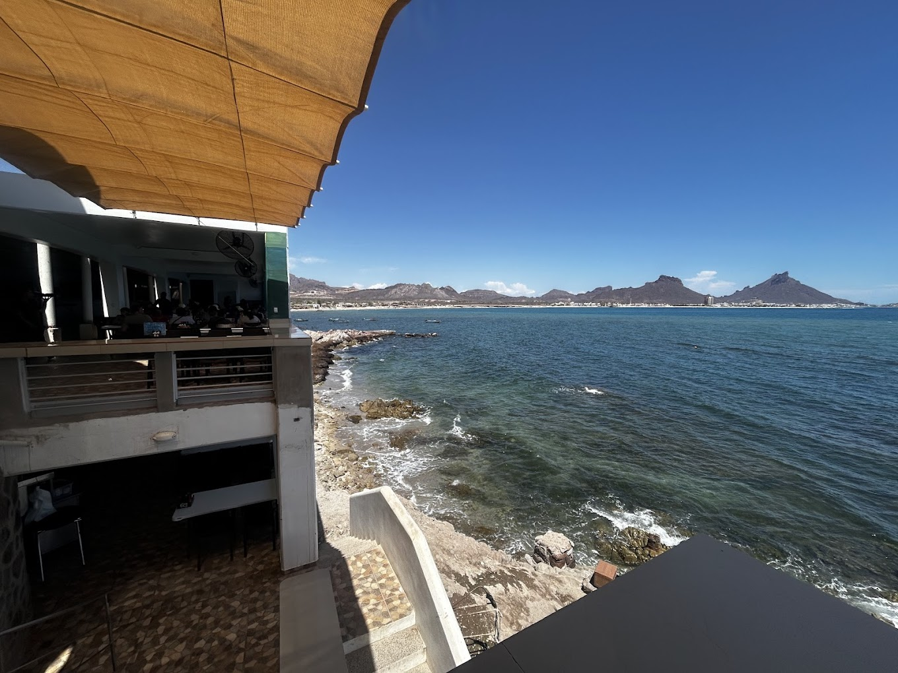
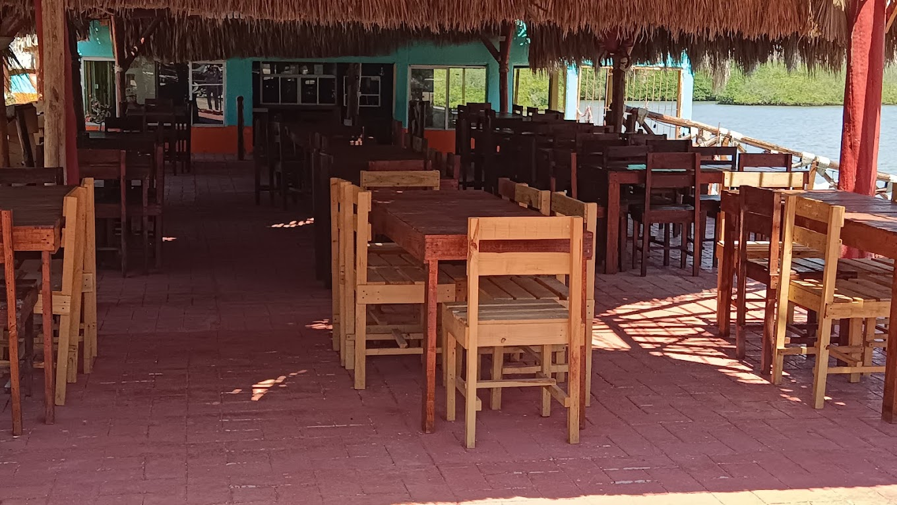
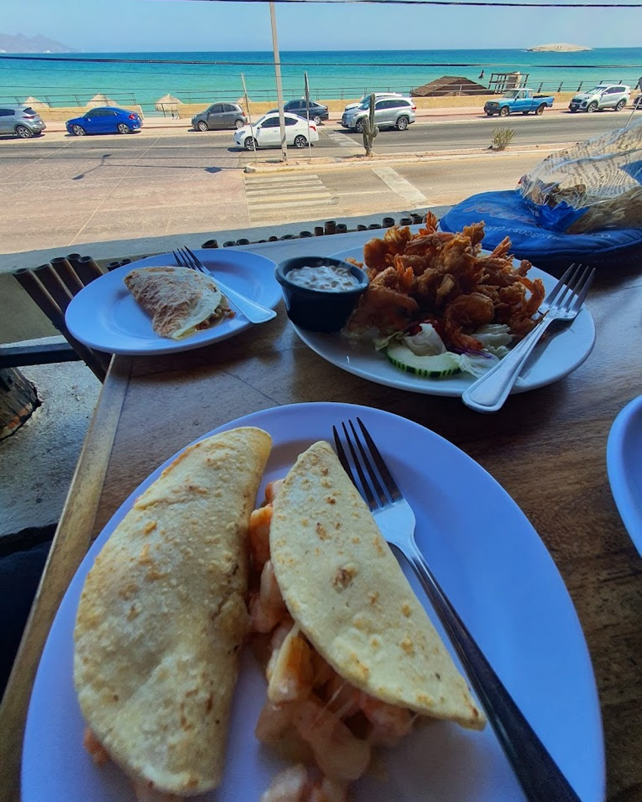

Los visitantes a menudo vienen a San Carlos por las playas, pero los locales saben que algunas de las mejores experiencias suceden alrededor de la mesa. Si quieres disfrutar el verdadero sabor de San Carlos, esta guía te ofrece recomendaciones confiables y curadas de donde realmente comen los locales. Sin buscar en grupos de Facebook, sin adivinanzas — solo buena comida respaldada por el conocimiento de la comunidad.
Qué Significa "Comer Como Local" en San Carlos
Cultura de Mariscos de la Costa Sonorense:
- Pescado y camarones frescos del Mar de Cortés
- Palapas rústicas, restaurantes de pueblos pesqueros y cocinas familiares
- Menús de la pesca del día que cambian dependiendo de lo que provee el océano
- Ambientes casuales y acogedores con un verdadero sentido de comunidad
- Sin presentación turística elegante — solo comida excelente
Si quieres "San Carlos auténtico," esto es.
Mejores Lugares Locales Para Comer en San Carlos

1. Restaurante Doña Rosita (La Manga)
Mejor para: Experiencia auténtica de pueblo pesquero
Ambiente: Rústico, asientos tipo palapa, junto al agua
Por qué les encanta a los locales: Se siente intacto por el turismo; todo está basado en la pesca del día en La Manga, uno de los últimos pueblos pesqueros tradicionales cerca de San Carlos.
Qué ordenar:
- Pescado frito entero
- Camarones al ajo
- Almeja reina (almejas grandes)
- Sopa de mariscos (favorita de los locales)
💡 Consejo local: Ve temprano en la tarde — los platillos a menudo se agotan según la demanda.
Abrir en Mapas

2. Mariscos El Esterito
Mejor para: Mariscos simples y frescos cerca del estero
Ambiente: Marisquería clásica; sin lujos, solo buena comida
Qué ordenan los locales:
- Filetes de pescado
- Cocteles de camarón
- Platillos estilo ceviche
Por qué van los locales: Reputación de larga data y un ambiente muy tradicional y local.
Abrir en Mapas

3. Mariscos Los Arbolitos (Sucursal San Carlos)
Mejor para: Mariscos estilo local con un menú más amplio
Ambiente: Animado, familiar y sonorense hasta el corazón
Qué ordenar:
- Ceviche de camarón y callo de hacha
- Pescado a la parrilla o estilo zarandeado
- Tostadas de mariscos
- Platillos de pulpo y sopas de mariscos
Por qué les gusta a los locales: Aunque es parte de una cadena sonorense, la sucursal de San Carlos es popular entre familias locales y ofrece una experiencia de mariscos auténtica y confiable.
Abrir en Mapas
Platillos Locales Imperdibles en San Carlos
Estos son básicos de la cultura de mariscos de la costa sonorense — ordena estos si quieres la experiencia local real:
Pescado Frito
Pescado entero frito con limón y salsa.
Camarones al Mojo de Ajo
Camarones al ajo servidos chisporroteando.
Coctel de Camarón
Coctel de camarones con salsa de tomate picante.
Almeja Reina
Almejas grandes preparadas frescas — especialmente famosas en La Manga.
Sopa de Mariscos
Una sopa caliente y sabrosa de mariscos hecha a menudo de la pesca fresca.
Consejos Locales Para Comer (Que Los Visitantes Siempre Aprecian)
🌟 Consejos de Expertos:
- Trae efectivo — especialmente para La Manga y restaurantes tipo palapa.
- Pregunta por la pesca fresca: Di "¿Qué pescado está fresco hoy?"
- Ve temprano: Muchos lugares locales sirven hasta que se les acaba la comida.
- Espera lo rústico: Estos restaurantes se tratan de sabor, no de decoración.
- Los fines de semana están más ocupados: Planea visitas entre semana para esperas más cortas.
Ruta Comer-Como-Local (Recorrido Gastronómico Recomendado)
Si quieres probar varios lugares auténticos en un día:
🍽️ Experiencia Gastronómica Local de Un Día:
- Almuerzo al mediodía en La Manga en Doña Rosita – prueba almejas o pescado frito.
- Para en El Esterito – consigue un coctel de camarón o filete de pescado.
- Cena en Mariscos Los Arbolitos – disfruta de un amplio menú y brisa del océano.
Esta ruta te da lo rústico, lo tradicional y la experiencia clásica de mariscos sonorenses — todo en un día.